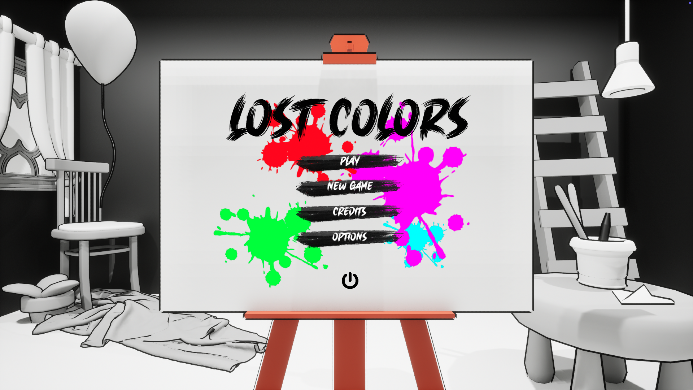

Lost Colors

Step into the home of a once-brilliant painter who, afflicted by a severe creative block, now sees the world in black and white - literally.
Armed with the magical Color Brush, it’s up to you to help them. Color and restore the objects depicted in their paintings, unlock new rooms, and ultimately rediscover the lost inspiration. With every puzzle you solve, color will slowly come back into their life.